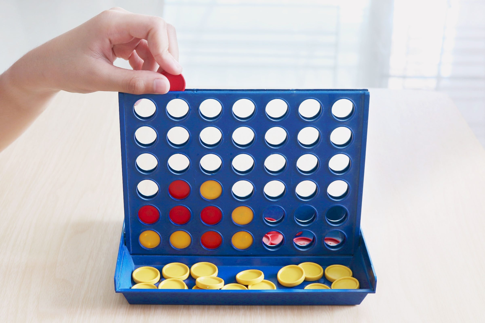

Hardware Projects

Face-Tracking Robot Eye (Ongoing, Collaborative Project)
This project is a collaboration with a friend to build a robot “eye” that turns to follow people in real time. I am focusing on the software and hardware integration: using OpenCV on Raspberry Pi to detect faces (about 90% accuracy so far) and controlling a NEMA 17 stepper motor to rotate toward the subject. My teammate is leading the mechanical design and 3D-printed parts, while I continue refining the detection pipeline and motor control for smoother tracking.
Raspberry Pi Alarm Clock
A digital alarm clock built on a Raspberry Pi Pico with a DS3231 RTC module and LCD. Designed to mimic the simplicity of classic Casio watches, it allows setting time and alarms through push-buttons and alerts users with a buzzer. This project combined embedded C++ programming, hardware soldering, and real-world testing to ensure the clock worked reliably as a standalone device.
Java Projects
Java-Based Connect 4 Game(Hackathon Submission)
I developed a networked multiplayer Connect 4 game in Java featuring a multithreaded server and a Swing-based GUI. The game supports multiple players with real-time state synchronization and event-driven updates, ensuring smooth and responsive gameplay. This project was submitted as part of a team hackathon, where our playable prototype earned 3rd place in a two-day competition.
Python Projects

Word Ladder
Word ladder is a game where the user is prompted with a source word and a target word, and they have to provide a sequence of words that form a ladder from the source word to the target word.

Facility Location Problem
The goal is of this project is to determine the fewest number of facilities needed so that every city is within a specified radius r of a facility.
C++ Projects
Bejeweled
A classic match-three puzzle game implemented in C++. The player swaps adjacent gems to form matching rows or columns of three or more identical gems.
Space War
A 2D space shooter game built in C++ where the player controls a spaceship and battles against enemy ships while avoiding obstacles and collecting power-ups.
Web Development Projects
Tic-Tac-Toe
A Tic-Tac-Toe web game, built using modern web technologies and responsive design principles.
Simon-Color-Clash
A Simon-Color-Clash web game, built using modern web technologies and responsive design principles.
Unity Game Development
Brick Smasher
A classic arcade-style brick breaking game developed in Unity. The player controls a paddle to bounce a ball that breaks bricks at the top of the screen.